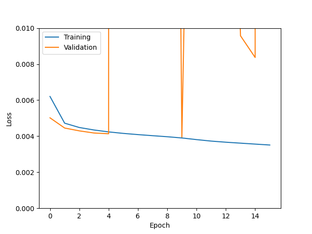
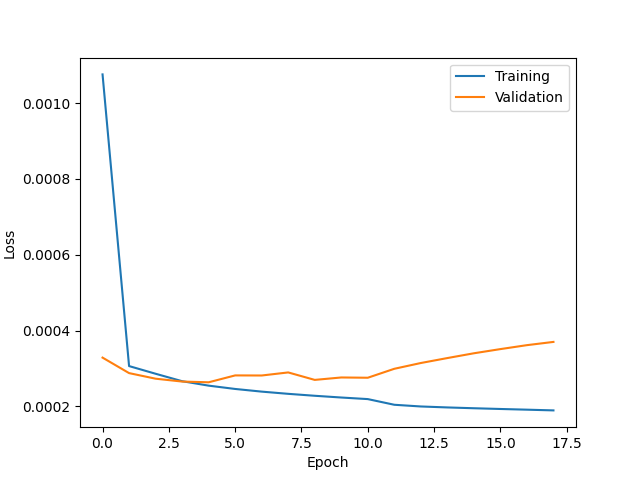

Tables (final)
Explanation
- Concentration: Concentration is either High (60) or Low (15).
- Resolution: We will compare 3 levels of resolution: Low, Medium, and High. These correspond to a pixel width 80, 20, and 10 mas respectively. (Note: this terminology is inconsistent with the earlier tables.)
- Method: Direct UNet or physics-based.
- True positive rates: What are the true positive rates corresponding to a false negative rate of 10%? The four numbers are for the mass bins in increasing order: 10^8-10^8.5, 10^8.5-10^9, 10^9-10^9.5, 10^9.5-10^10.
This table shows slightly different UNets for the physics-based pipeline.
Table of varying concentration and resolution
| Concentration | Resolution | Method | True positive rates | Loss curves |
|---|---|---|---|---|
| 15 | Low (80) | Direct | (Did not run) | |
| 15 | Medium (20) | Direct | 0.112, 0.135, 0.160, 0.238 | |
| 15 | High (10) | Direct | 0.103, 0.116, 0.132, 0.184 | |
| 60 | Low (80) | Direct | 0.090, 0.135, 0.336, 0.601 |  |
| 60 | Medium (20) | Direct | 0.211, 0.468, 0.718, 0.885 | |
| 60 | High (10) | Direct | 0.238, 0.489, 0.713, 0.879 |  |
| 15 | Medium (20) | Physics-based | 0.085, 0.090, 0.137, 0.231 | |
| 60 | Medium (20) | Physics-based | 0.148, 0.296, 0.493, 0.634 | 
|